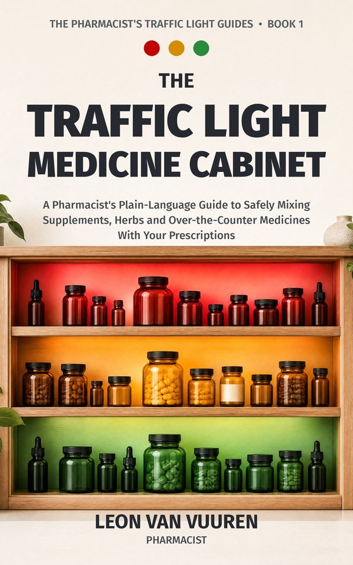

Can I take this with my medicines?
Tick the prescription medicines you take, then choose the product you want to use. The light shows the strictest colour across all your medicines.
1. Your prescription medicines
Find the name on your box or pharmacy label. Tick all that apply.
2. The product you want to take
Painkillers, cold remedies, vitamins, herbs, supplements, foods and drinks.

The Traffic Light Medicine Cabinet
A pharmacist's plain-language guide to safely mixing supplements, herbs and over-the-counter medicines with your prescriptions.
- 1,100 common combinations rated RED, AMBER or GREEN
- 20 prescription medicine groups and 55 everyday products
- A 30-minute medicine cabinet check, with worksheets
- What to say to your doctor and pharmacist
Watch on YouTube
Short, plain-English videos from a working pharmacist.
Straight Talk Pharmacist
Medicine mixes, side effects and the questions people ask at the pharmacy counter.
Visit the channel →About Leon
Leon Van Vuuren is a South African pharmacist. For years, the question he heard most across the counter was "Can I take this with my tablets?" This checker and his books give you clear, calm answers, so you can talk to your own doctor and pharmacist with confidence.
Privacy: this site uses no tracking and no sign-up. Your ticked medicines are saved only in your own browser.